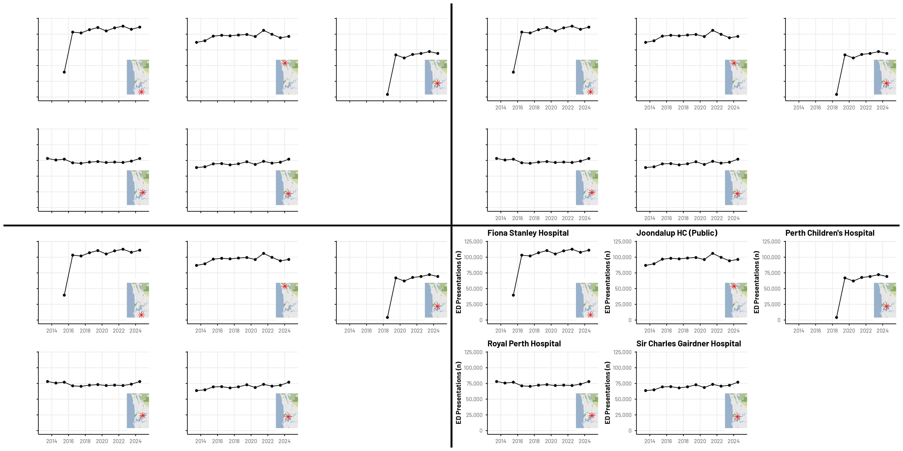
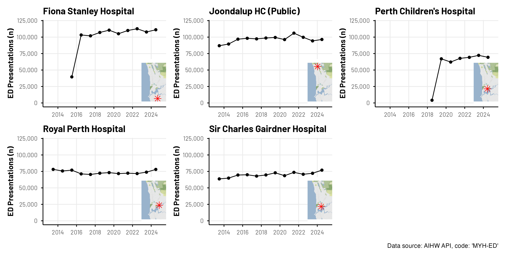

The AIHW works with a range of stakeholders from across Australia to carry out high-quality research covering a broad range of health domains; they also produce many reports each year contextualising the state of the nation’s health. While the data that supports these reports is often available for download from their website (.xslx, .csv), a range of the data can can also by accessed via Application Programming Interface (API). The MyHospitals API opens the door to automated, real-time access, and offers much greater flexibility in how you explore and analyse the data.
In this post, we’ll demonstrate—as an example—how to access emergency department presentation (ED) data for major hospitals here in Western Australia, process it in R, and create an insightful visualisation.

Figure 1: All 4 “Guess The Plots” Together

Figure 2: The final plot
Diving in!
There are many ways to access data via API using R; for example, you might look to combine the httr package with the jsonlite package to build your own query. Instead, we’re going to leverage the great work that has already been done in the readaihw package to dive right in without getting too technical from a data request and restructuring perspective. With just a few steps, we’ve got the data that we are after!
Use the read_flat_data_extract() to source the "MYH-ED".
Use the get_hospital_mappings() function to source metadata for the hospitals; then reducing this dataset to just what we’re interested in.
Some further data processing (filtering, variable manipulation, aggregation) prior to joining the two datasets together.
Expanding on these four steps above. In Step 2, we use the read_flat_data_extract() function from the readaihw package to retrieve ED presentation data for hospitals in Western Australia. This function simplifies API access and returns a tidy data frame ready for analysis. The MYH-ED code specifies that we are asking for the count of monthly ED presentations across hospitals in Australia. Other key columns in this dataset include: reporting_unit_code (unique hospital identifier), date (month and year of the record), value (number of ED presentations). In Step 2, while the returned API call includes data from many other hospitals and locations, we just want to focus on key metropolitan hospitals in Western Australia, so we filter the dataset using hospital codes and names. We also join geographic coordinates to each hospital so we can later include inset maps.
This gives us a clean dataset ready for plotting and mapping.
Code
# Step 1library(thekidsbiostats)library(readaihw)# Step 2ed_presentations <-read_flat_data_extract(measure_category_code ="MYH-ED")# Step 3msh_hospital_codes <-get_hospital_mappings() |>filter(state =="Western Australia", type =="Hospital") |>filter(name %in%c("Perth Children's Hospital","Fiona Stanley Hospital","Sir Charles Gairdner Hospital","Joondalup Health Campus (Public)","Royal Perth Hospital Wellington Street Campus")) |>select(code, latitude, longitude)# Step 4my_aihw_dat <- ed_presentations |>filter(reporting_unit_code %in% msh_hospital_codes$code) |>select(reporting_unit_code, date = reporting_end_date, hospital = reporting_unit_name, value) |>mutate(value =as.numeric(value), date = lubridate::ymd(date)) |>group_by(hospital, date) |>summarize(count =sum(value, na.rm =TRUE),code = reporting_unit_code[1]) |>left_join(msh_hospital_codes, by =join_by(code == code))# Let's have a look my_aihw_dat |>head(10) |>thekids_table(colour ="AzureBlue")
hospital
date
count
code
latitude
longitude
Fiona Stanley Hospital
2015‑06‑30
39571
H0746
‑32.070120
115.846909
Fiona Stanley Hospital
2016‑06‑30
103234
H0746
‑32.070120
115.846909
Fiona Stanley Hospital
2017‑06‑30
101901
H0746
‑32.070120
115.846909
Fiona Stanley Hospital
2018‑06‑30
107041
H0746
‑32.070120
115.846909
Fiona Stanley Hospital
2019‑06‑30
110553
H0746
‑32.070120
115.846909
Fiona Stanley Hospital
2020‑06‑30
105122
H0746
‑32.070120
115.846909
Fiona Stanley Hospital
2021‑06‑30
110029
H0746
‑32.070120
115.846909
Fiona Stanley Hospital
2022‑06‑30
112678
H0746
‑32.070120
115.846909
Fiona Stanley Hospital
2023‑06‑30
107770
H0746
‑32.070120
115.846909
Fiona Stanley Hospital
2024‑06‑30
111145
H0746
‑32.070120
115.846909
Where did the "MYH-ED" code come from?
Great question!
There are many different variables that can be sourced. You can find a descriptive list online, but we can also use the API (and some of those packages mentioned earlier) to import the list of codes directly into R!
Median waiting time for surgery for malignant cancer
MYH0003
Percentage of people who received surgery for malignant cancer within 30 days
MYH0004
Percentage of people who received surgery for malignant cancer within 45 days
MYH0005
Percentage of patients who depart the emergency department within four hours of arrival
MYH0006
Number of elective surgeries
MYH0007
Percentage of patients who waited longer than 365 days for elective surgery
MYH0008
Percentage of patients who received their surgery within clinically recommended times
MYH0009
Median waiting time for elective surgery
MYH0010
Percentage of patients who commenced treatment within the recommended time
From here, the world (of AIHW MyHospital data) is your oyster!
Extended example - Guess. That. Plot!
Every so often, on one of our internal communication platforms, we’ll do a little ‘Guess That Plot’ quiz. It’s a fun way to engage staff from around our Institute in some conversation and critical thinking around data and visualisations. And it possibly goes without saying—the above plot is indeed a recent example of one of these ‘Guess That Plot’ quizzes we did where we used AIHW data!
The code for this is below.
But first, some notes …
For something a little different, we inset a map of Perth into these plots with a marker for the point of interest. This involves using the ggmaps package and registering here at Stadia Maps for a free account to receive a token to allow us to access the map tile images.
We obviously can’t share our token; the full .qmd for this post won’t run until you update the code with your own token. For that reason, we insert .pngs of the figures that were saved earlier.
Now we will create a base map of the Perth area and define a function to generate small inset maps for each hospital. Each inset will mark a hospital’s location with a red star on the map. These inset maps can be added to other plots to visually show the exact location of each hospital, while keeping the map clean and free of axes or labels.
library(ggmap)library(patchwork)register_stadiamaps("YOUR-TOKEN-GOES-HERE", write =FALSE)# Define the Perth areaperth_bbox <-c(left =115.65, bottom =-32.1, right =115.95, top =-31.70)# Source the map tiles for the area we needperth_map <-get_stadiamap(bbox =as.matrix(perth_bbox),maptype ="stamen_terrain_background")# Form a grob object of the map that we will reuse in each plotinset_map <-function(latitude, longitude) { latitude <-as.numeric(latitude) longitude <-as.numeric(longitude)ggplotGrob(ggmap(perth_map) +annotate("point", x = longitude, y = latitude,color ="red", size =3, shape =8) +theme_void())}
In addition:
We use an lapply to iterate over each hospital. Typically, we might look to purrr::map or other functions from the tidyverse for tasks like this. We acknowledge here that AI assisted with some of the code here.
We use wrap_plots() from the patchwork package to assemble the figures. We originally looked at using facet_wrap() (or similar) from the ggplot2 package, but this proved quite challenging when incorporating the inset map with varying red X marker.
We use white text on a white background, as opposed to element_blank() because it keeps all dimensions of the plots consistent as we work through to the reveal! This is really important so plot elements don’t change relative size and position!
Figure 1: Not much to go off!
This plot only shows the time series where both x- and y-axis labels and hospital names are hidden, but perhaps the markings on the maps are a hint? Particularly if you remember which year certain hospitals opened…
This version includes visible axes and ticks, making the data easier to interpret. A caption indicating the data source (AIHW API) is added as a real nudge to what the data might be. Hospital names are still hidden.
Putting these four stages of the reveal together also posed a few challenges, namely combining multiple plots that themselves were assembled with patchwork.
For this, we again turned to AI, and the resulting code is available below.
Code
# Divider "plots" (vertical and horizontal)v_thickness <-0.005# fraction of width for vertical divider (adjust)h_thickness <-0.01# fraction of height for horizontal divider (adjust)divider_v <-ggplot() +theme_void() +theme(plot.background =element_rect(fill ="black", colour =NA))divider_h <- divider_v # same look for horizontal divider# Make rows with a vertical divider between plotstop_row <-wrap_plots(p1, divider_v, p2, ncol =3, widths =c(1, v_thickness, 1))bottom_row <-wrap_plots(p3, divider_v, p4, ncol =3, widths =c(1, v_thickness, 1))# Combine rows with a horizontal divider between themfinal <-wrap_plots(top_row, divider_h, bottom_row, ncol =1, heights =c(1, h_thickness, 1)) +plot_layout(ncol =1) finalggsave(paste0(Sys.Date(), "_fig1-4.png"),width =20, height =10)
Figure 7: All 4 Guess The Plots Together
Closing comments
Accessing health data via the AIHW API opens up many possibilities for data analysis and visualisations to help us understand trends in Australian Health Statistics. Perhaps it may even contain informative data to aid in one’s own study planning! The readaihw package puts this data at the fingertips of any R user, reducing the barriers to diving in and exploring this data. The figures shown here are not overly polished—as that wasn’t the purpose of this post. However, hopefully we’ve shown how easy it can be to draw some interesting local insights while having a bit of fun along the way.
Acknowledgements
Thanks to Zac Dempsey, Robin Cook, Elizabeth McKinnon, and Wes Billingham for providing feedback on and reviewing this post.